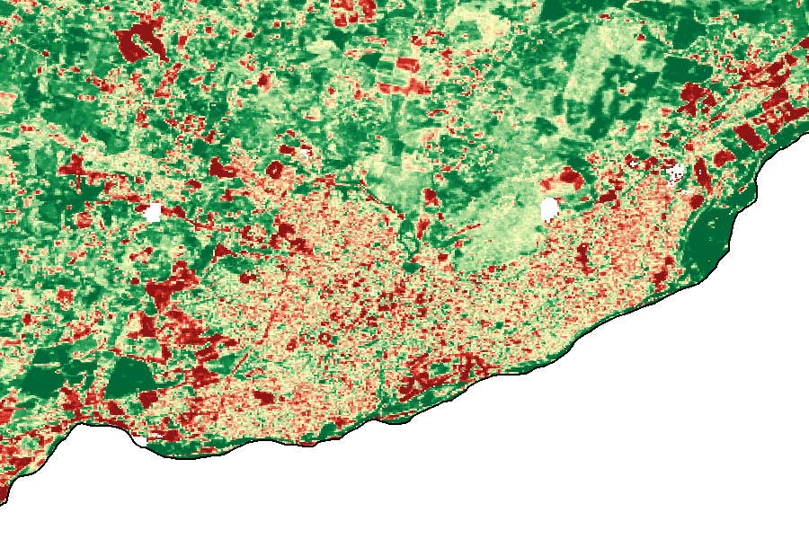
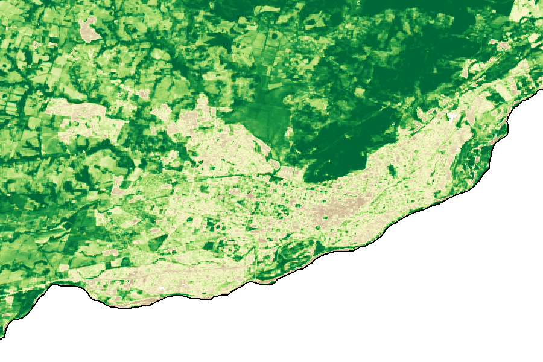
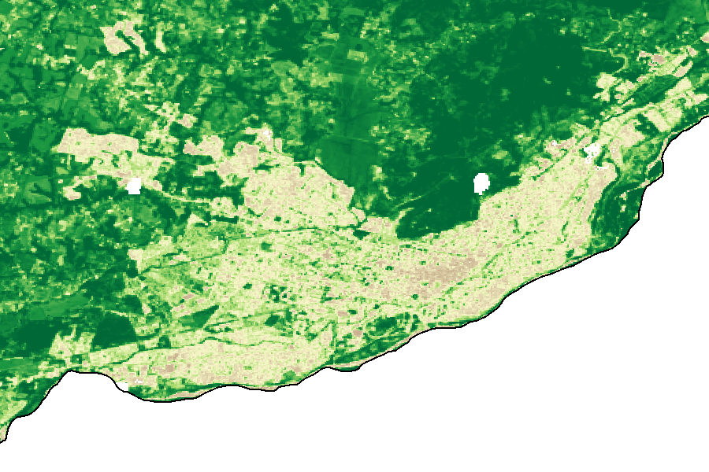
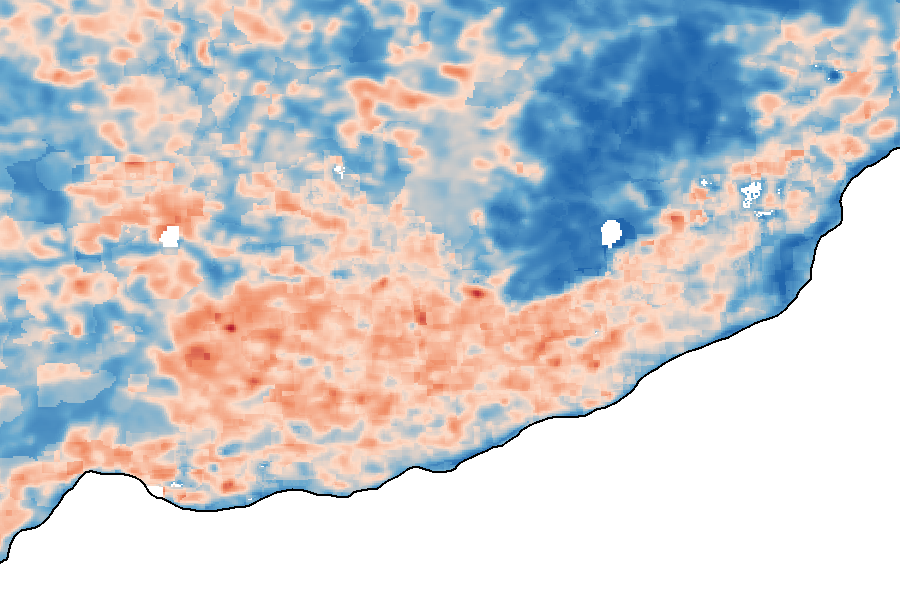

<!-- Observatorio de Arbolado Urbano de Temuco — dashboard (Capa 1, prototipo) -->
<!-- Página estática: las imágenes son PNG exportados de Google Earth Engine.
     No usa tiles en vivo (esos llevan tokens que expiran), así que cualquiera
     la ve sin login ni cuota. Servible en GitHub Pages desde /docs. -->
<meta charset="utf-8" />
<meta name="viewport" content="width=device-width, initial-scale=1" />
<title>Observatorio de Arbolado Urbano de Temuco</title>
<style>
  :root {
    --ground: #f6f7f3;
    --surface: #ffffff;
    --surface-2: #eef0ea;
    --ink: #1a1d17;
    --ink-soft: #4a4f45;
    --ink-faint: #7c8274;
    --line: #dce0d5;
    --accent: #1a7a3c;
    --loss: #b5391f;
    --gain: #1a7a3c;
    --band: #eaf0e6;
    --shadow: 0 1px 2px rgba(20,30,15,.06), 0 8px 24px rgba(20,30,15,.06);
    --serif: Georgia, "Iowan Old Style", "Times New Roman", serif;
    --sans: system-ui, -apple-system, "Segoe UI", Roboto, sans-serif;
  }
  @media (prefers-color-scheme: dark) {
    :root {
      --ground: #12140f;
      --surface: #1a1d16;
      --surface-2: #23271e;
      --ink: #eef0e8;
      --ink-soft: #b6bcac;
      --ink-faint: #828a76;
      --line: #2e3327;
      --accent: #6cc48b;
      --loss: #e2694f;
      --gain: #6cc48b;
      --band: #1c2016;
      --shadow: 0 1px 2px rgba(0,0,0,.3), 0 8px 24px rgba(0,0,0,.35);
    }
  }
  :root[data-theme="light"] {
    --ground: #f6f7f3; --surface: #fff; --surface-2: #eef0ea; --ink: #1a1d17;
    --ink-soft: #4a4f45; --ink-faint: #7c8274; --line: #dce0d5; --accent: #1a7a3c;
    --loss: #b5391f; --gain: #1a7a3c; --band: #eaf0e6;
  }
  :root[data-theme="dark"] {
    --ground: #12140f; --surface: #1a1d16; --surface-2: #23271e; --ink: #eef0e8;
    --ink-soft: #b6bcac; --ink-faint: #828a76; --line: #2e3327; --accent: #6cc48b;
    --loss: #e2694f; --gain: #6cc48b; --band: #1c2016;
  }
  * { box-sizing: border-box; }
  body {
    margin: 0; background: var(--ground); color: var(--ink);
    font-family: var(--sans); line-height: 1.6;
    -webkit-font-smoothing: antialiased;
  }
  .wrap { max-width: 1060px; margin: 0 auto; padding: 0 24px; }
  header { border-bottom: 1px solid var(--line); padding: 44px 0 30px; }
  .eyebrow {
    font-size: 12px; letter-spacing: .14em; text-transform: uppercase;
    color: var(--accent); font-weight: 600; margin: 0 0 12px;
  }
  h1 {
    font-family: var(--serif); font-weight: 600; font-size: clamp(28px, 4vw, 42px);
    line-height: 1.12; margin: 0 0 14px; text-wrap: balance; letter-spacing: -.01em;
  }
  .lede { font-size: 18px; color: var(--ink-soft); max-width: 60ch; margin: 0; }
  .tag {
    display: inline-block; margin-top: 18px; font-size: 12.5px; font-weight: 600;
    color: var(--ink-faint); border: 1px solid var(--line); border-radius: 999px;
    padding: 4px 12px; letter-spacing: .02em;
  }
  section { padding: 40px 0; border-bottom: 1px solid var(--line); }
  h2 {
    font-family: var(--serif); font-weight: 600; font-size: 22px; margin: 0 0 6px;
    letter-spacing: -.01em;
  }
  .sub { color: var(--ink-faint); font-size: 14px; margin: 0 0 22px; }
  /* Banda de hallazgo */
  .finding {
    background: var(--band); border: 1px solid var(--line); border-radius: 14px;
    padding: 28px 30px; display: flex; gap: 30px; align-items: center; flex-wrap: wrap;
  }
  .stat { font-family: var(--serif); font-weight: 600; font-size: 60px; line-height: 1;
    color: var(--loss); font-variant-numeric: tabular-nums; }
  .stat small { display: block; font-size: 14px; font-family: var(--sans);
    color: var(--ink-soft); font-weight: 500; margin-top: 8px; letter-spacing: .01em; }
  .finding p { margin: 0; flex: 1 1 320px; color: var(--ink-soft); font-size: 15.5px; }
  /* Grids de mapas */
  .maps { display: grid; grid-template-columns: 1fr 1fr; gap: 20px; }
  .maps.one { grid-template-columns: 1fr; }
  figure {
    margin: 0; background: var(--surface); border: 1px solid var(--line);
    border-radius: 12px; overflow: hidden; box-shadow: var(--shadow);
  }
  figure img { display: block; width: 100%; height: auto; }
  figcaption { padding: 12px 16px; font-size: 13.5px; color: var(--ink-soft); }
  figcaption b { color: var(--ink); font-weight: 600; }
  /* Leyenda */
  .legend { display: flex; gap: 18px; flex-wrap: wrap; margin: 16px 0 0; font-size: 13px;
    color: var(--ink-soft); align-items: center; }
  .sw { display: inline-flex; align-items: center; gap: 7px; }
  .chip { width: 26px; height: 12px; border-radius: 3px; display: inline-block; }
  /* Notas */
  .notes { display: grid; grid-template-columns: 1fr 1fr; gap: 18px 34px; }
  .note h3 { font-size: 14px; margin: 0 0 4px; color: var(--ink); }
  .note p { margin: 0; font-size: 14px; color: var(--ink-soft); }
  footer { padding: 34px 0 60px; color: var(--ink-faint); font-size: 13px; }
  footer a { color: var(--accent); }
  code { font-family: ui-monospace, "SFMono-Regular", Menlo, monospace; font-size: .9em;
    background: var(--surface-2); padding: 1px 5px; border-radius: 4px; }
  @media (max-width: 720px) {
    .maps, .notes { grid-template-columns: 1fr; }
    .stat { font-size: 48px; }
  }
</style>

<header>
  <div class="wrap">
    <p class="eyebrow">Observatorio Ciudadano · Temuco, La Araucanía</p>
    <h1>Cómo está cambiando el verde de Temuco</h1>
    <p class="lede">Un radar satelital de la vegetación de la comuna, año a año, para
      ver dónde se está perdiendo cobertura verde y ponerlo al alcance de cualquiera.</p>
    <span class="tag">Prototipo · Capa 1 (radar) · datos preliminares</span>
  </div>
</header>

<section>
  <div class="wrap">
    <div class="finding">
      <div class="stat">9,2%<small>del área urbana perdió verde<br>de forma marcada, 2014 → 2024</small></div>
      <p>Medido con imágenes Landsat 8 (NASA/USGS): la fracción del área urbana de Temuco
        donde el índice de vegetación (NDVI) cayó de manera clara en diez años. Es una
        primera señal de <b>dónde mirar</b>, no un conteo de árboles — eso viene en la
        siguiente etapa.</p>
    </div>
  </div>
</section>

<section>
  <div class="wrap">
    <h2>El mapa del cambio</h2>
    <p class="sub">Diferencia de NDVI entre 2014 y 2024 sobre el área urbana. Comparado
      con el mismo satélite y la misma estación (verano), para que el cambio no sea un
      artefacto técnico.</p>
    <div class="maps one">
      <figure>
        
        <figcaption><b>Cambio de vegetación 2014 → 2024.</b> Rojo = pérdida de verde ·
          Verde = ganancia. La mancha urbana (centro) muestra pérdidas dispersas manzana
          a manzana; los grandes parches rojos rurales suelen ser tala de plantaciones
          forestales (ruido para el arbolado urbano).</figcaption>
      </figure>
    </div>
    <div class="legend">
      <span class="sw"><span class="chip" style="background:#8c1515"></span> Pérdida fuerte</span>
      <span class="sw"><span class="chip" style="background:#d73027"></span> Pérdida</span>
      <span class="sw"><span class="chip" style="background:#ffffbf;border:1px solid var(--line)"></span> Sin cambio</span>
      <span class="sw"><span class="chip" style="background:#1a9850"></span> Ganancia</span>
      <span class="sw"><span class="chip" style="background:#006837"></span> Ganancia fuerte</span>
    </div>
  </div>
</section>

<section>
  <div class="wrap">
    <h2>Antes y ahora</h2>
    <p class="sub">Índice de vegetación (NDVI) en verano. Cuanto más oscuro el verde,
      más densa la vegetación.</p>
    <div class="maps">
      <figure>
        
        <figcaption><b>2014.</b> Verano austral, Landsat 8.</figcaption>
      </figure>
      <figure>
        
        <figcaption><b>2024.</b> Verano austral, Landsat 8.</figcaption>
      </figure>
    </div>
  </div>
</section>

<section>
  <div class="wrap">
    <h2>El costo en calor</h2>
    <p class="sub">Temperatura de superficie en verano (Landsat 8). La ciudad es una
      isla de calor: donde faltan árboles, la superficie se calienta.</p>
    <div class="finding" style="margin-bottom:24px">
      <div class="stat">+5 °C<small>más caliente en las calles sin árboles que en las
        arboladas · verano 2024</small></div>
      <p>En el área urbana de Temuco, las zonas con poca vegetación llegan a unos 30 °C
        de superficie; las de arbolado denso, unos 25 °C. La relación entre vegetación y
        temperatura es fuerte y clara (correlación <b>−0,65</b>). Coincide con lo medido
        en otras ciudades chilenas: reverdecer baja la isla de calor entre 1 y 5 °C. Cada
        árbol que se pierde es sombra y frescura que se pierde.</p>
    </div>
    <div class="maps one">
      <figure>
        
        <figcaption><b>Temperatura de superficie, verano 2024.</b> Azul = más fresco
          (bosque, campo, ríos) · Rojo = más caliente (ciudad, suelo desnudo). La mancha
          urbana se recorta en rojo sobre un entorno más frío.</figcaption>
      </figure>
    </div>
    <div class="legend">
      <span class="sw"><span class="chip" style="background:#2166ac"></span> ~18 °C</span>
      <span class="sw"><span class="chip" style="background:#67a9cf"></span> fresco</span>
      <span class="sw"><span class="chip" style="background:#fddbc7;border:1px solid var(--line)"></span> templado</span>
      <span class="sw"><span class="chip" style="background:#ef8a62"></span> caliente</span>
      <span class="sw"><span class="chip" style="background:#b2182b"></span> ~42 °C</span>
    </div>
  </div>
</section>

<section>
  <div class="wrap">
    <h2>Cómo leer esto (y qué no es todavía)</h2>
    <p class="sub">La honestidad metodológica es parte del observatorio.</p>
    <div class="notes">
      <div class="note">
        <h3>Mide verde, no árboles</h3>
        <p>El NDVI no distingue un árbol de un pasto o un cultivo. Sirve para ver dónde
          cambió la cobertura verde; el conteo de árboles individuales es la Capa 2.</p>
      </div>
      <div class="note">
        <h3>Resolución de 30 metros</h3>
        <p>Cada píxel es de 30 × 30 m. Detecta la pérdida de un grupo de árboles o un
          parche, no un ejemplar suelto del bandejón.</p>
      </div>
      <div class="note">
        <h3>Misma estación, mismo satélite</h3>
        <p>Comparamos verano con verano y Landsat 8 con Landsat 8, para que el cambio no
          sea efecto de la estación ni del sensor.</p>
      </div>
      <div class="note">
        <h3>El área incluye ruido rural</h3>
        <p>El recorte urbano es amplio y toma periferia agrícola/forestal. El próximo
          paso es ajustarlo al límite urbano estricto del Plan Regulador.</p>
      </div>
    </div>
  </div>
</section>

<footer>
  <div class="wrap">
    Datos: Landsat 8 (NASA / USGS) vía Google Earth Engine · Límite comunal oficial
    (DPA Chile 2023). Proyecto ciudadano de arbolado urbano — en colaboración con la
    ONG Verde Urbano. Prototipo con fines de análisis; las cifras son preliminares.
  </div>
</footer>
